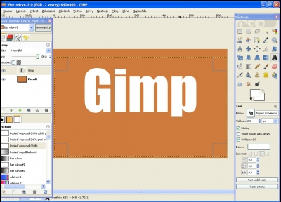
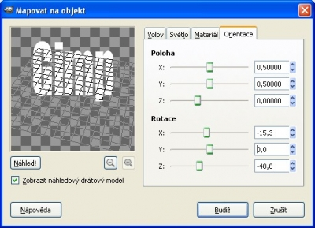
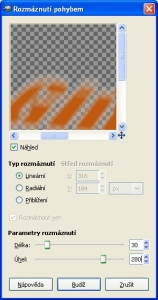
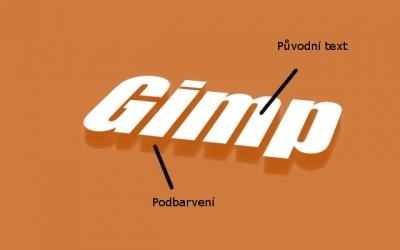

Web je již jen v režimu pro čtení a není možné přidávat nové komentáře nebo dotazy do fóra. Díky za přízeň.
Main menu
You are here
3D Text
1. September 2012 - 16:51 — Fikus
- Vytvoříme si nový obrázek s rozměry 640×400px a libovolně barevným pozadím (já zvolil cf7b3e)
- Vytvoříme si text s atributy: Barva: Libovolná (já zvolil bílou) Velikost: 200px (nejlepší pro určené rozměry obrázku) Font:Impact Condensed (nejlépe se hodící)
 - Přejdeme na Filtry → Mapa → Mapovat Objekt
- Parametry nastavíme podobně jako na obrázku:
 - Nyní vrstvu s textem duplikujeme (pravým myšítkem na vrstvu s textem a zvolíme „Duplikovat vrstvu“)
- Na vzniklý duplikát vrstvy s textem klikneme pravým myšítkem a zvolíme Alfa do výběru
- Vybereme si barvu podbarvení (to co dělá 3D text 3D)
- Přidržíme SHIFT a klikneme do podbarvení textu
- Pořád budeme pracovat s vrstvou s podbarvením
- Zvolíme si Filtry → Rozostření → Rozmáznutí pohybem a nastavíme parametry podle obrázku:
 - Rozmazanou vrstvu s podbarvením duplikujeme, dokud se nám text nezdá 3D (nejlépe alespoň 10x ) Poté můžeme všechny nově vytvořené vrstvy sloučit (pravé myšítko na vrstvu a „sloučit dolů")
- Na sloučené vrstvy aplikujeme Filtry → Rozostření → Gaussovské rozostření s parametrem 5.
- Výsledek+popis:
 - Jiné možné výsledky:
- S efektem odrazu
- S jednoduchým světelným efektem
- XCF: http://uloz.to/xose5jz/3dtext-xcf-xcf
- -Fikus
{kind=link}
{kind=link}
{kind=link}
{kind=link}
{kind=link}
{kind=link}
Web je již ukončen. Nebude zde přibývat žádný nový obsah. Případné dotazy prosím na l.bacovsky(a)outlook.cz
Comments
Re: 3D Text
Re: 3D Text
Re: 3D Text
Re: 3D Text
Re: 3D Text
Re: 3D Text
Re: 3D Text
Re: 3D Text
Re: 3D Text
Re: 3D Text
Add new comment